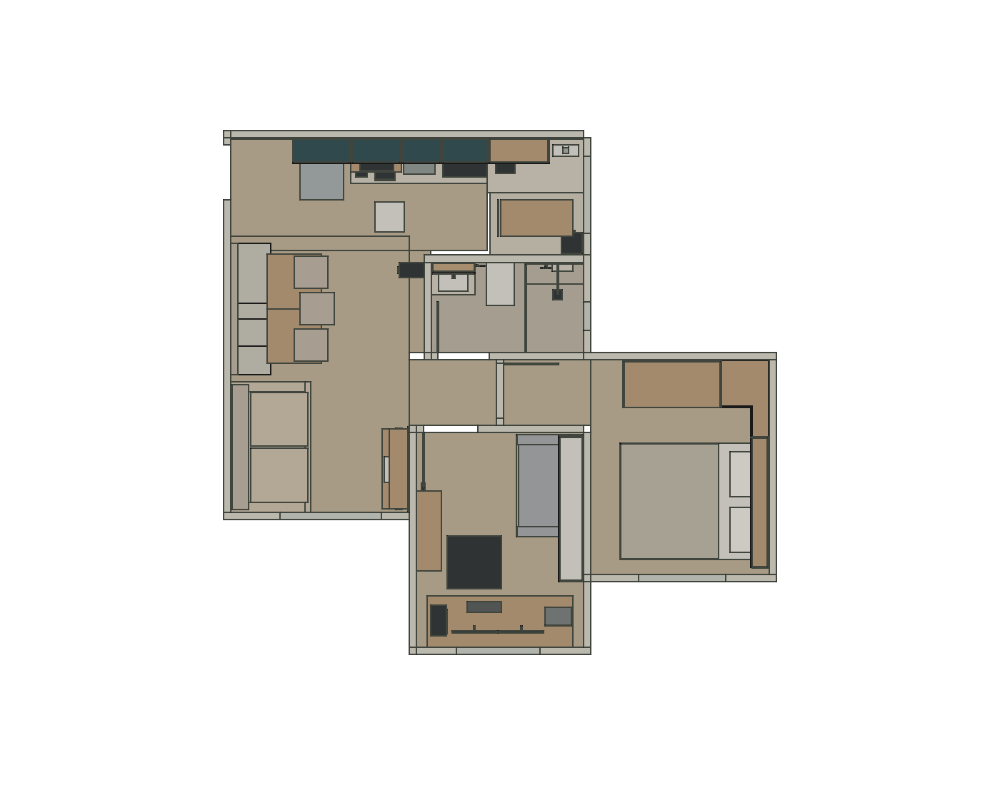
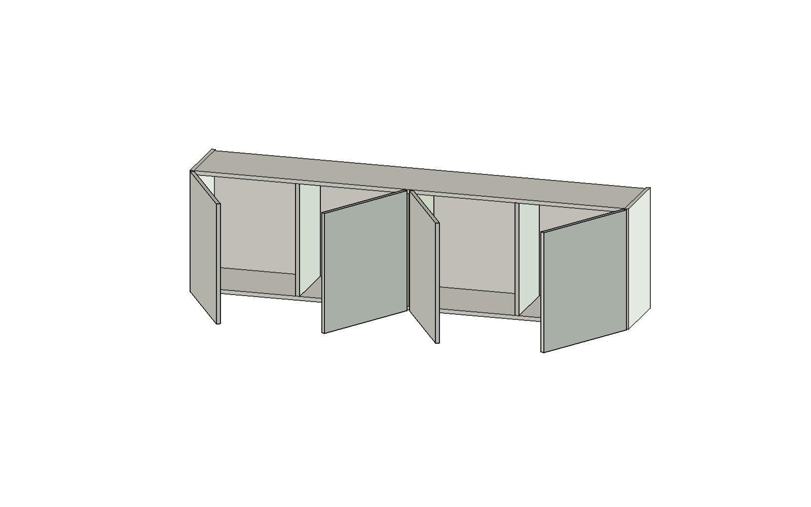
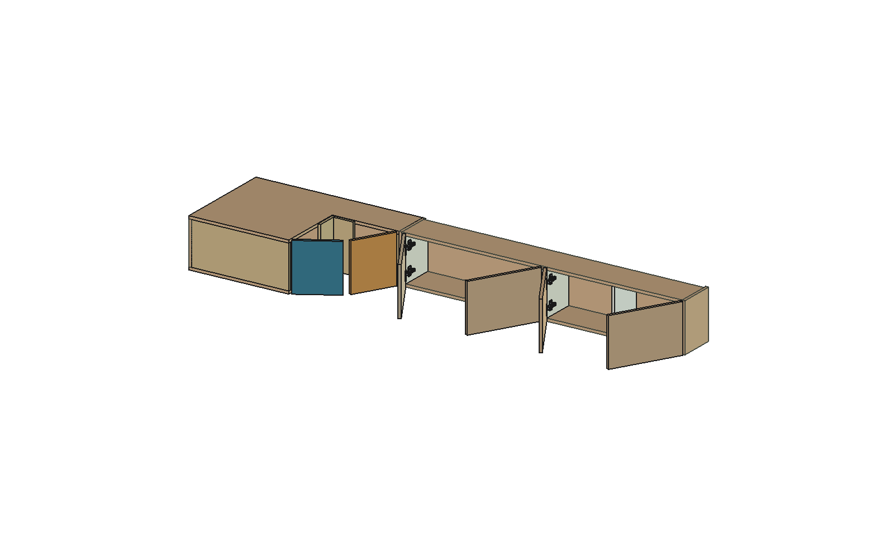
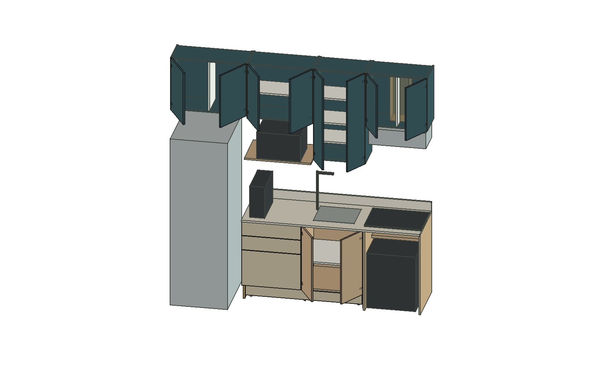
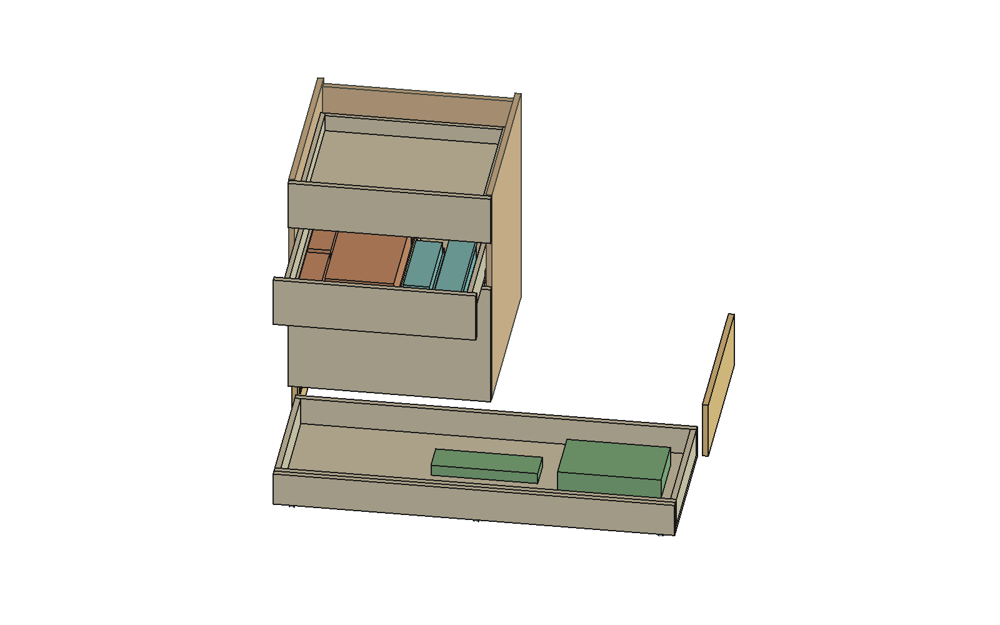
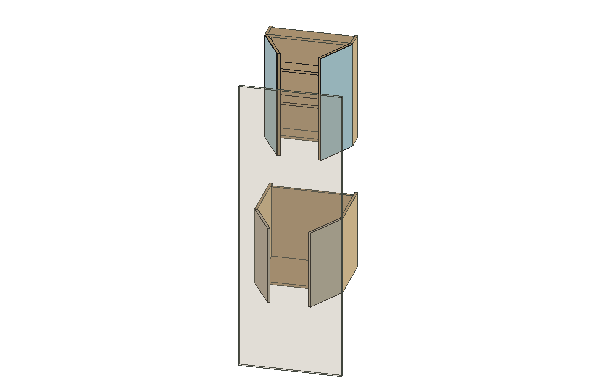
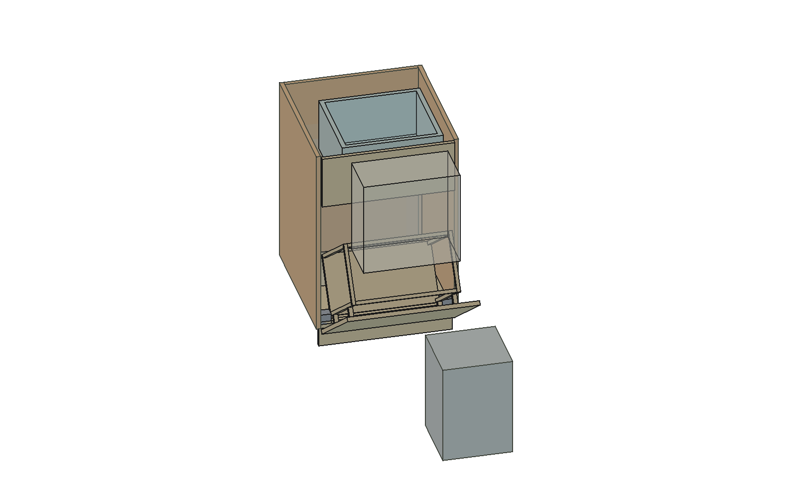
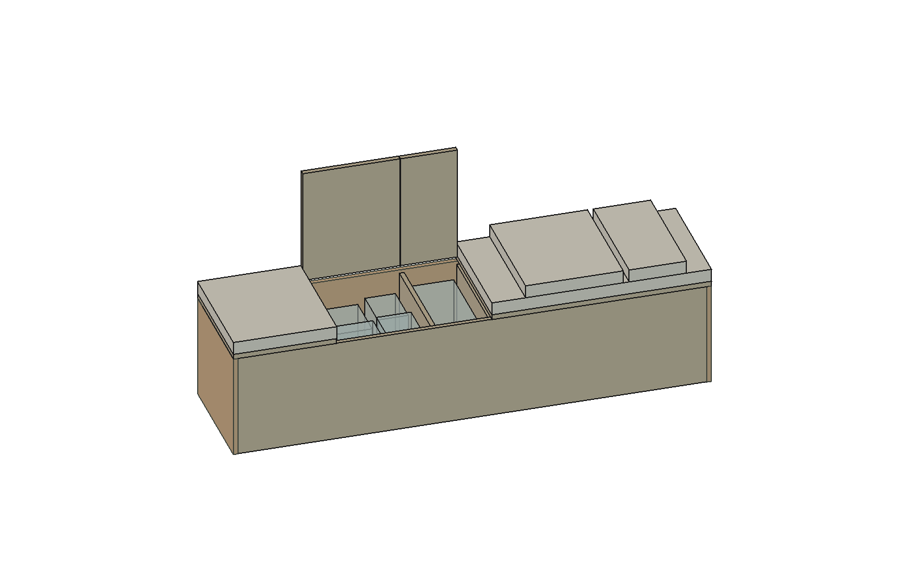
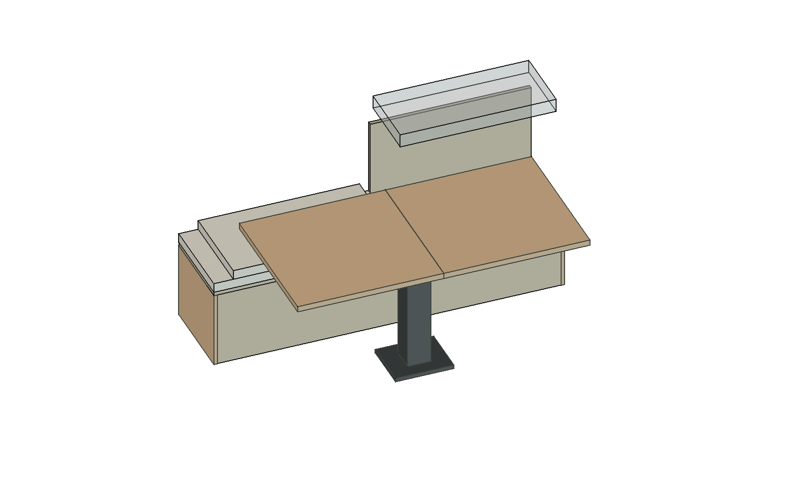

Guedala Park · FreeCAD · R27 · 14/10/2026
O apartamento espelhado e os acessos dos armários
Cozinha à esquerda ao entrar, portas vizinhas com sentidos opostos e canto simples. Corpos dos armários visíveis e46 acessos organizados por ambiente.
Arquivo FreeCAD atual · Conjunto e pendências · Guia dos controles
R26 acrescenta endereço temporário proposto da Loop20L: afastar650mm lateralmente para manutenção e retornar após fechar o cesto. O arquivo mantém posição habitual; manuseio/piso/ferragens reais pendentes. Sequência e evidências.
R27 restaura a representação oficial de dois perfis fixos G2, mantendo posição física;925 formas nativas atuais válidas. Alturas comparadas somente com cenários, incluindo escritório sem margem nominal ao teto. Correção e limites.

Modelo de estudo. As vistas abaixo mostram poses ilustrativas e contexto selecionado; o arquivo atual mantém seus valores salvos. Ferragens, fixação, carga, tolerâncias e instalações reais seguem com pendências. Sem liberação de corte, furação ou compra.
As oito vistas de acesso abaixo são referências anteriores R22. Armários e movimentos foram preservados; a posição do sofá e o volume antigo do tanque nessas referências foram corrigidos naR24 e não representam a implantação atual. Consulte a planta acima e o arquivo vigente.
Escritório — quatro portas alternadas

Cabeceira e canto simples

Cozinha — portas comuns e nichos

Gavetas e armazenamento baixo

Banheiro — acesso com entrada fechada

Cesto — abertura e saco removível

Banco — bebidas e balde

Banco — proposta para retirada da folha

Cobertura dos vinte módulos · Galeria R01 preservada — histórica · Plano até19h